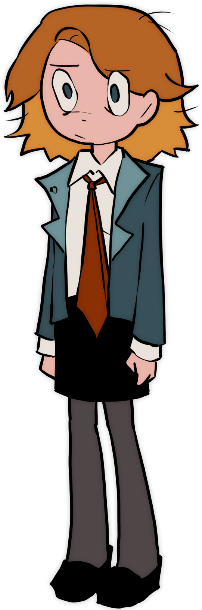

Characters

Ashley Dobrik
A senior highschool student who's 3 years younger than her class. Ever since her mother killed herself, she has been living under the care of her aunt. Lately she's been struggling to keep up with her classmates and copes by writting in a diary.
Diane Dobrik
Isn't in speaking terms with her sister, partly because she hated her but mostly because she's currently dead. She never intended to have a child but loves Ashley to death.
Leslie Feebee
A Social buttery and Ashley's... best friend? It's hard to tell sometimes. She's a bit ditzy but she means well. Always giving out questionable advice, often rooted with her obsession of Noir literature.
Sunny Dui
Intelligent but incredibly distant. Doesn't talk beyond what she thinks is necessary but still a sister figure to Ashley. She wanted to become a doctor because of her mother, not that it matters much anymore.
Wendy Dui
Vocal of her passion of the performing arts and an extreme clutz. She often wonders if she should of been more academically inclined like her twin sister, Sunny.